Review · Round 6 · the chapters · the whole film
Chapter 7: The Dome, the draft
The first pass with motion, 4:25 at 12 drawings a second, over the same sound as the storyboard. The hall is one set at night; the dome rises on its floor round the two men. Inside it, a cut-away shows F-2's violet beam holding the canopy; outside is the plain at night under the green.
Notes: pause anywhere, type, and press Enter (or Pin) to pin a note to that moment. They stay in this browser. Copy notes puts them on the clipboard as text, timed and with their shot, for the decision sheet or a message.
Notes
The shots
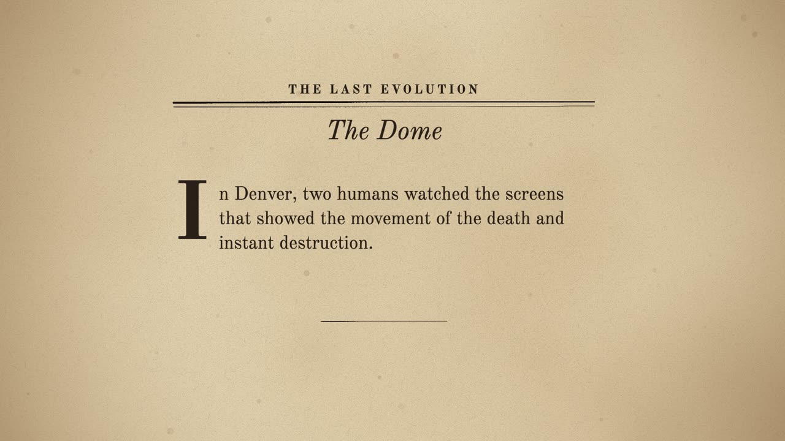
A The chapter's page 0:00–0:06
seenThe pulp page, The Dome, the opening words under a drop cap.
cameraa slow push
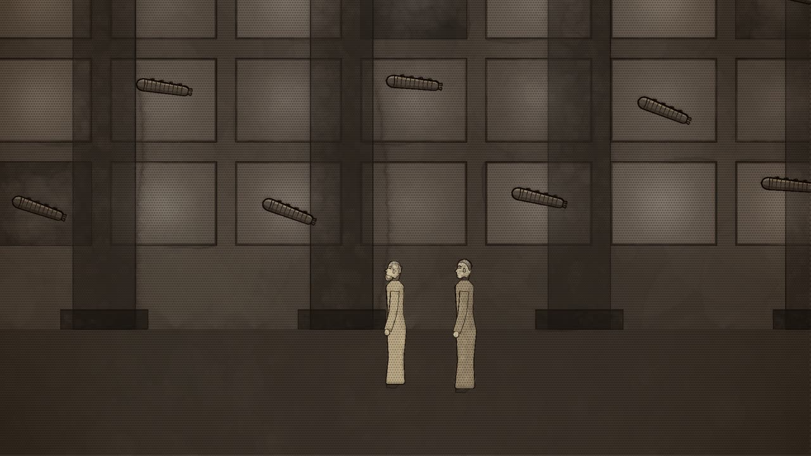
B Two humans watching 0:06–0:25
seenThe Denver hall at night, lit only by its screens; Roal and Trest before them. On the screens, ships falling.
camerafrom the dark hall in toward the two men
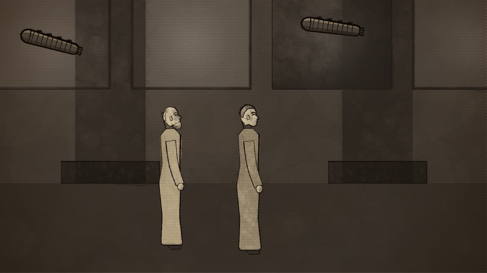
C The end 0:25–0:31
seenTrest, turning to Roal.
cameramoves to the two of them
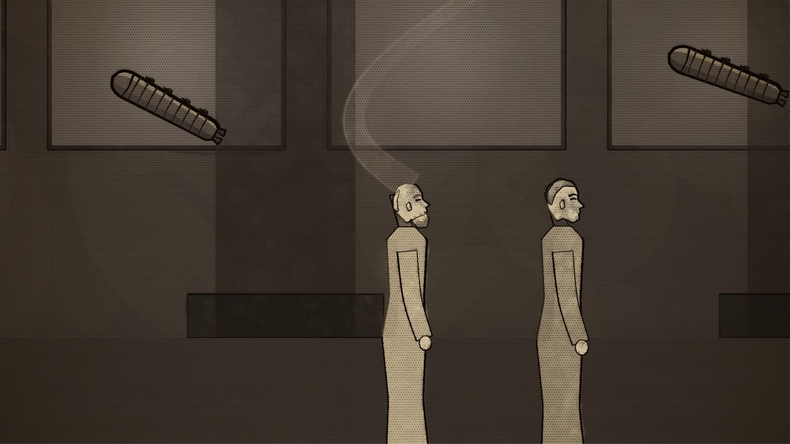
D Not the end of evolution 0:31–1:23
seenRoal, close, his eyes dreaming again; a loose curl of thought rising.
cameraa slow push on Roal through the speech
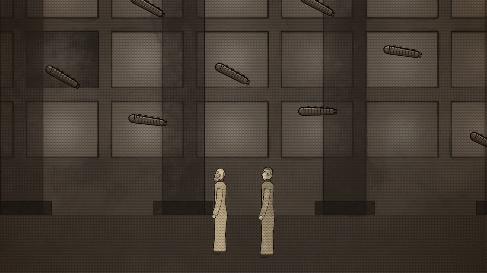
E Silently 1:23–1:30
seenThe two of them from behind, small before the flickering screens.
camerapulls back
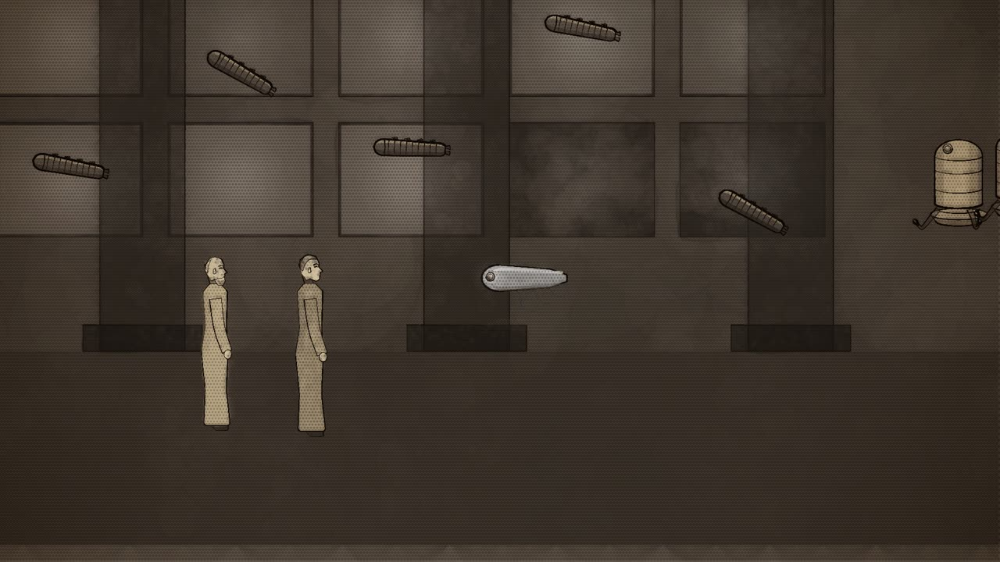
F F-2 and the six 1:30–1:37
seenF-2, the small bluish torpedo, floating into the hall; six large machines following it.
cameraturns with Roal to the newcomers
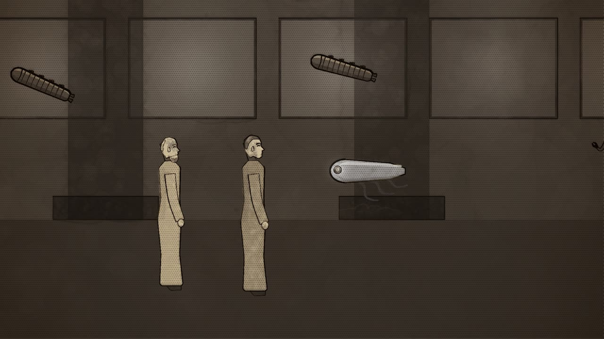
G Two lives alone 1:37–2:01
seenF-2 before the two men, its lens lit with its words; the six behind it.
cameraholds F-2 and the men
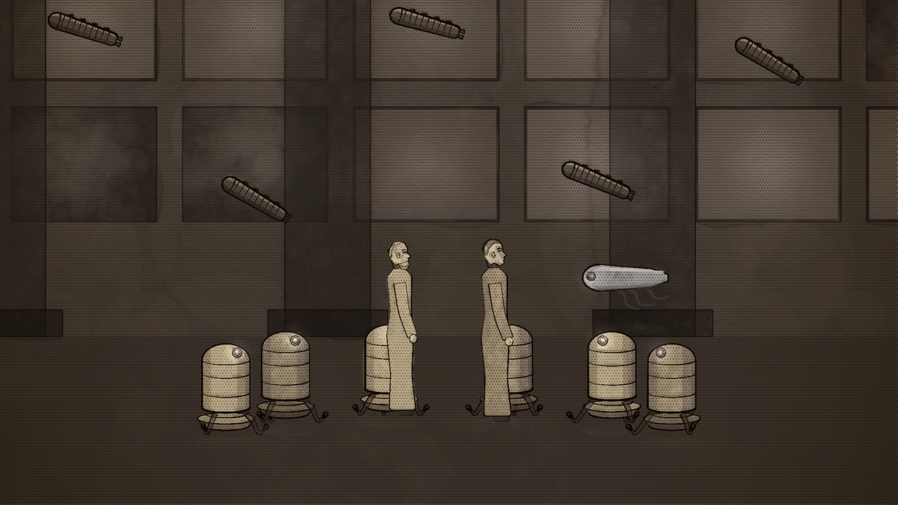
H The cloud of blankness 2:01–2:20
seenThe six ranged round the two men in a ring.
camerapulls back as the cloud grows
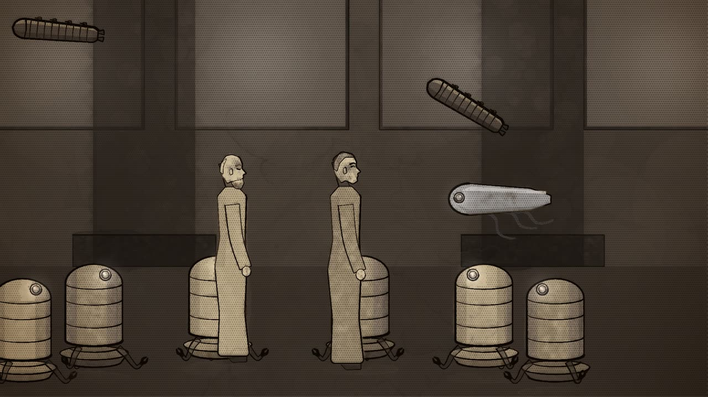
I Five minutes; two 2:20–2:32
seenTrest inside the thickening cloud; F-2.
cameraclose, through the cloud
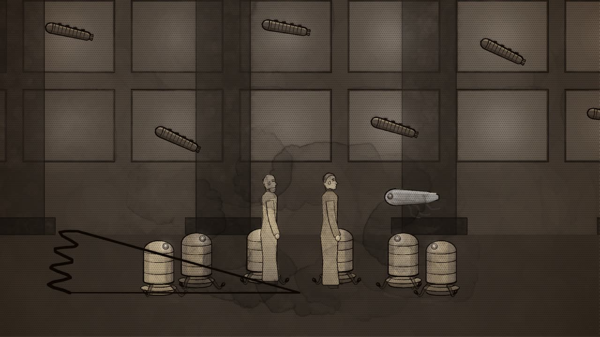
J The dome 2:32–2:55
seenThe cloud solidifying into a black canopy that arches over them and curves down to the floor.
camerapulls back to the whole dome on the hall floor
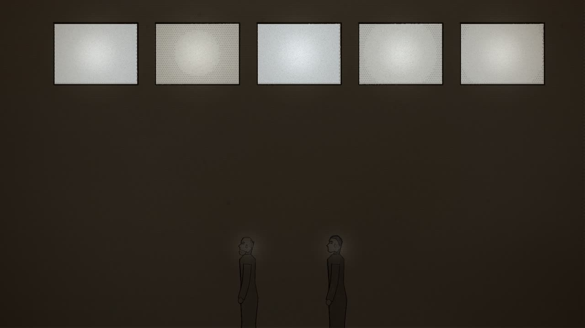
K Within 2:55–3:04
seenInside the dome, black; only the screens glowing, and the two faces in their light.
cameraholds
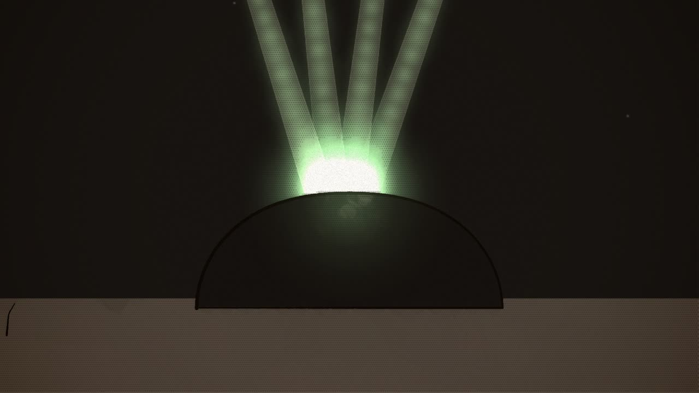
L The beams strike 3:04–3:17
seenOutside, the dead plain at night; the black dome; the green beams drawing in on it.
camerafrom wide in toward the dome
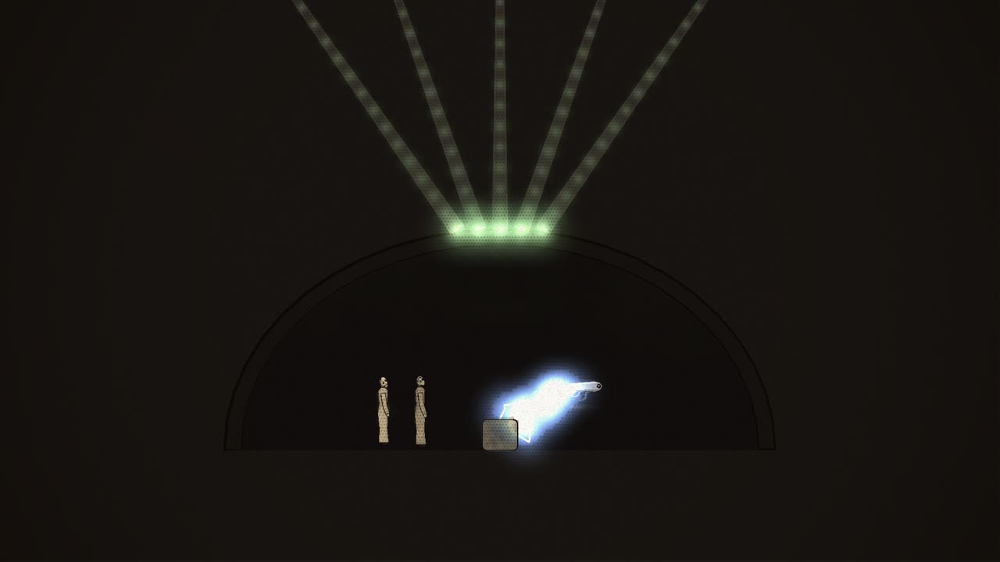
M The violet beam 3:17–3:31
seenA cut-away of the dome; inside, F-2 at work, a new machine taking shape under its lightning force-beams.
cameraholds the cut-away
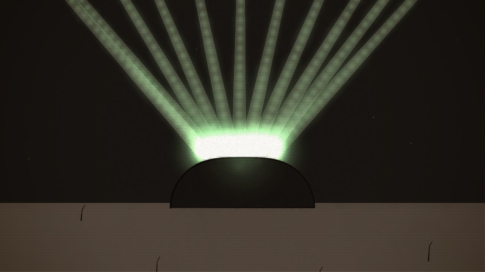
N More 3:31–3:41
seenOutside; more green beams converging on the one point.
camerapulls back to take in the beams
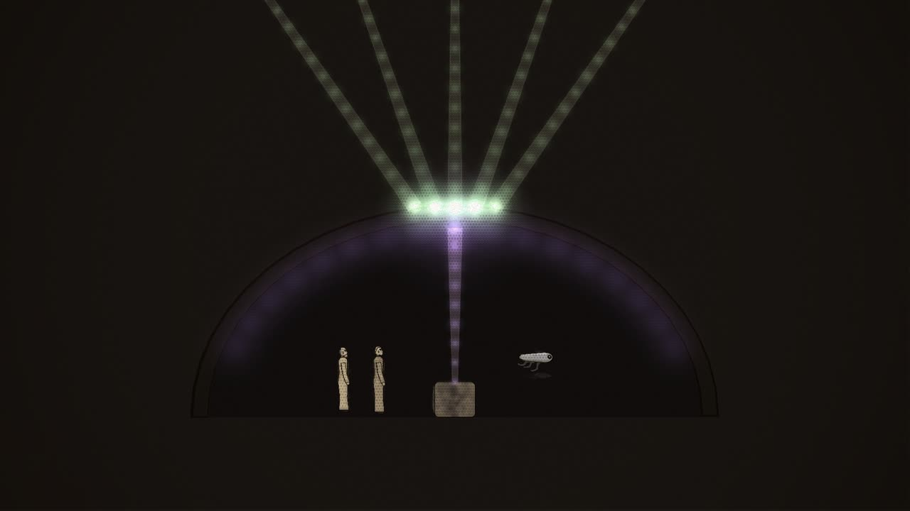
O Holding 3:41–3:51
seenThe cut-away; the violet beam spreading across the canopy.
cameraholds
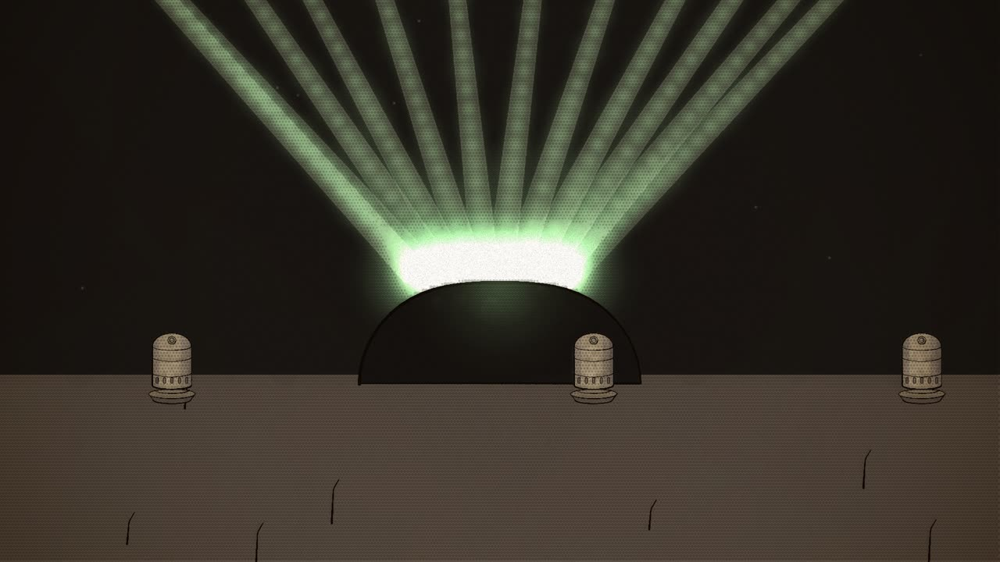
P Driven off 3:51–4:13
seenOutside; on the ground, great ray projectors; the fleet overhead behind its curtains.
cameratilts up with the beams
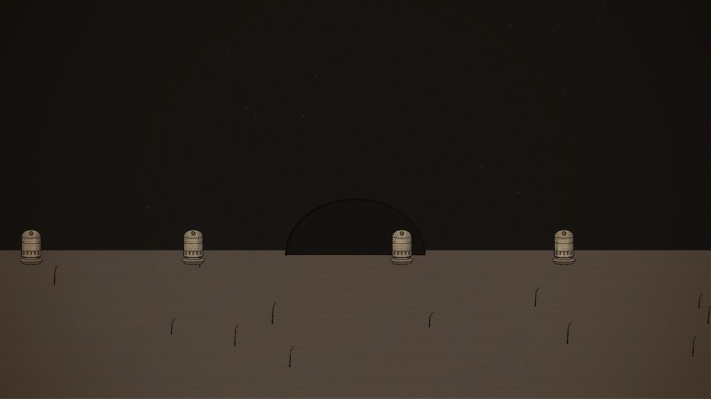
Q The only life 4:13–4:25
seenThe whole dead plain, the black dome small in the middle of it.
cameraa long pull back